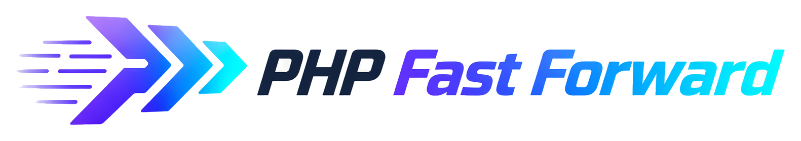

Symbol · Name · Character
A recognizable composition
for each context.
The chevrons identify the framework. Dash adds a clear character. Choose the institutional, developer, or editorial application to fit the message.
01 / Institutional signature
Use the symbol and name where compact, neutral product identification matters.

02 / Dash developer
The principal character family for framework identity, documentation, and engineering content.

03 / Dash editorial
A secondary family for community welcome, appreciation, and occasional institutional storytelling.
04 / Avatar composition study
A complete developer pose and a separate compact signature, demonstrated at 256px.
Keep the parts recognizable
- Preserve three right-facing chevrons and their original proportions.
- Keep at least a quarter of the mark's height clear on each side.
- Place Dash beside or above the signature without overlapping the head.
- Keep the complete ears and tail visible; do not stretch or add a halo.
- Choose one character family per composition.
Lettering has a separate master
These examples use a system-font fallback. The supplied raster lettering has not become a vector typeface or an editable logo master.
The native lettering work is tracked in task #8. Use the composition guide for implementation and export boundaries.